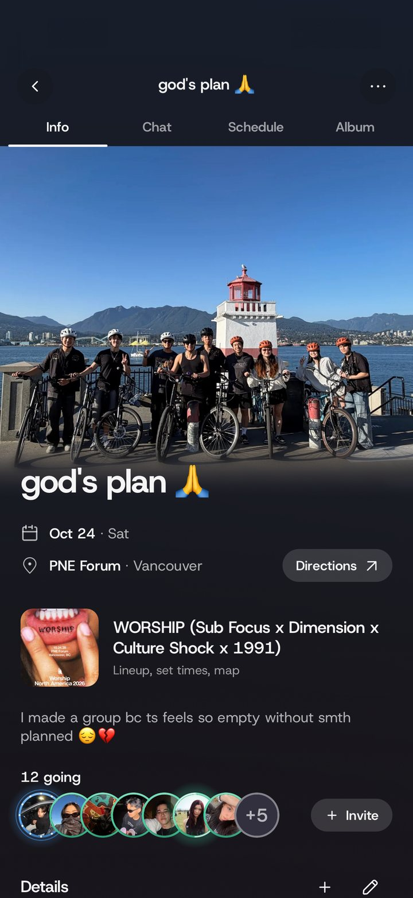
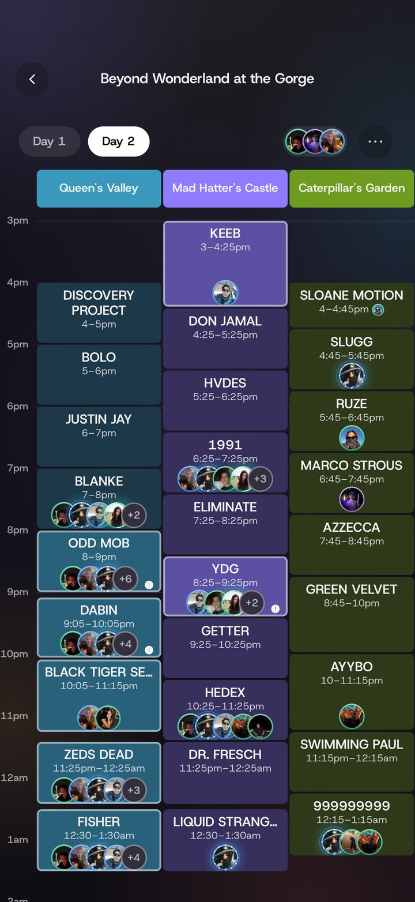
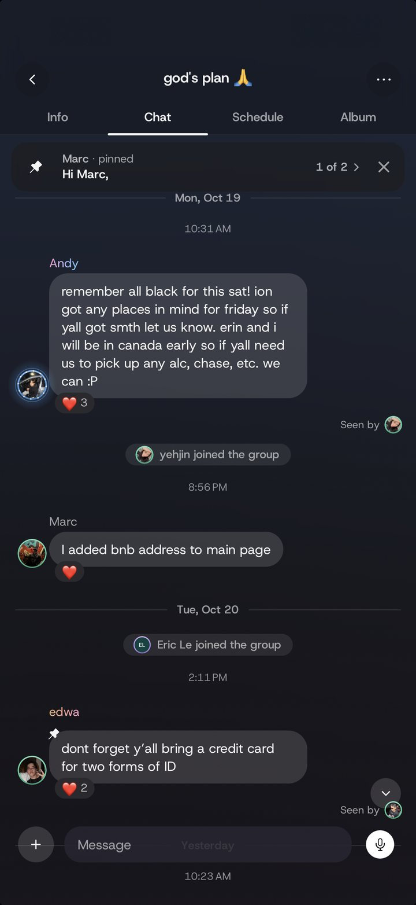
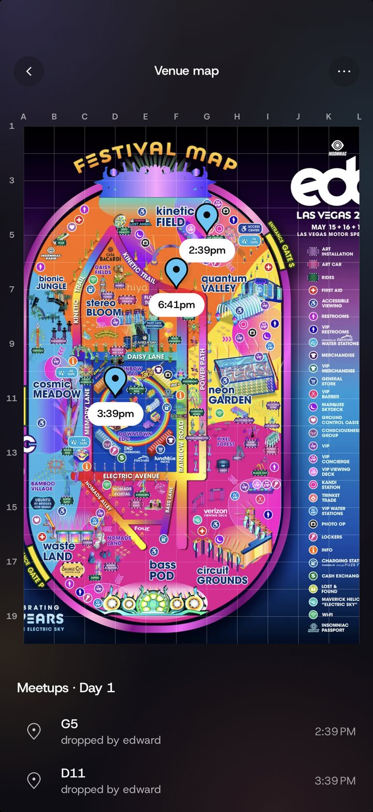
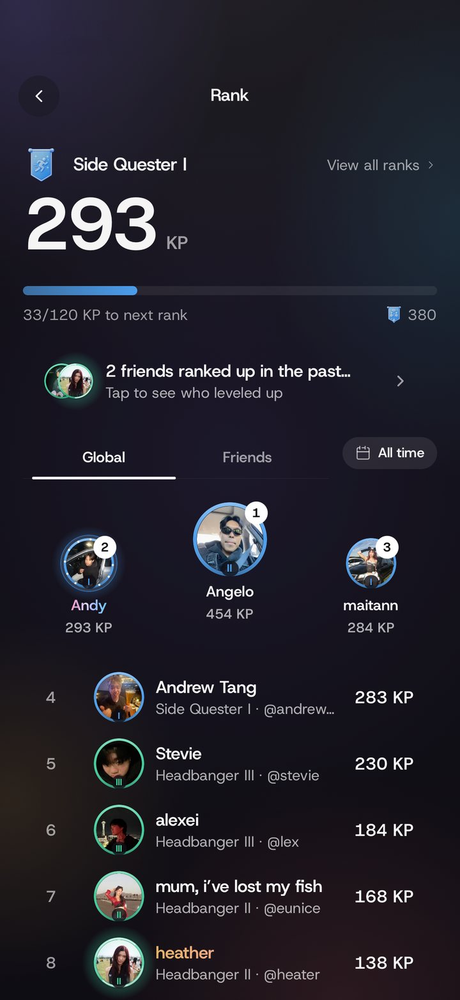
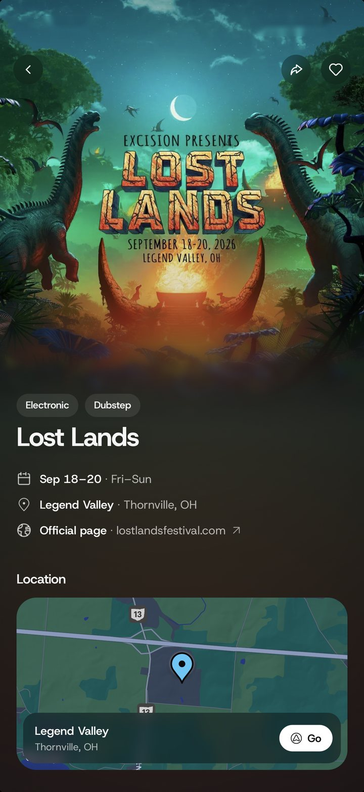
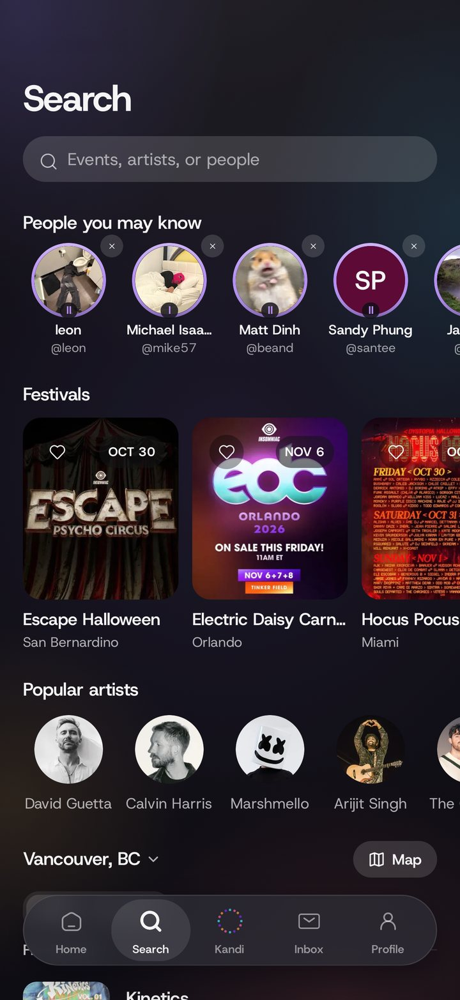

Why I built it
Every festival I've been to starts the same way: a messy group chat, five screenshots of the set times, and nobody knowing where to meet. Then you trade kandi with strangers all weekend and forget who half of them were by Monday.
kndi puts the planning in one place and keeps the memories. Every event gets a group with chat, polls, a shared schedule, rides, and an album. You get a heads up when two sets you picked overlap.



My role
I'm the top contributor on the team. On the original SwiftUI app I wrote 647 of 1,264 commits. In May 2026 we started rebuilding the whole app from scratch in React Native and Expo, using the SwiftUI app as the reference for how everything should behave across about 40 feature areas, and built it for both iOS and Android. Across both versions I've written 5,491 of 7,643 commits (72%).
I build with AI coding tools, which is how one person ships this much. My time goes into deciding what to build, testing how it feels, and fixing what breaks.
The areas I owned:
- Group chat and DMs. Realtime messages, typing indicators, @mentions, polls, voice messages, reactions, and read receipts.
- Offline first. Festivals have terrible signal, so messages, reactions, bracelets, and trades queue on the phone and sync when signal comes back.
- The design system. A shared token package and a component library of 150+ components, so every screen looks and behaves the same.
- Kandi. The bracelet designer, trading, and trade memories.
- Push notifications and admin tools, including the moderation and analytics admin portal.
- App Store launch. I led submission, including the moderation policy and DMCA registration.


Kandi, but digital
Kandi trading is the heart of festival culture, so I didn't want to replace it. You design a bracelet bead by bead, then trade it by scanning each other's phones in person. Each trade saves a memory of who you met and what they wrote.


Small product calls
Most of product work is small decisions. A few I made:
- Assume people without a car need a ride, so nobody gets stranded because they forgot to ask.
- An @mention breaks through a muted group. Muting cuts noise, not the message meant for you.
- Collapse group notifications per group, so a busy chat doesn't flood your lock screen.
- Only allow deleting a message for 2 minutes, enough to fix a typo without rewriting history.
- Anyone can pin a message, but only hosts or the pinner can unpin it.
- Rank festival lineups by Spotify monthly listeners, so the artists people know show up first.
What the data told us
Once people were using the app, I ran a cohort study on 251 signups to see who stuck around. New users who joined a group on their first day came back in week one at 44%, compared with 15% for everyone else.
That's a correlation. It doesn't prove joining a group makes people come back, since people who join on day one may just be more motivated. But the gap was big enough to act on, so I reshaped onboarding around getting new users into a group first.
kndi has about 560 users now.
Community and growth
Events, lineups, and artists sync in automatically from 9+ festival and music sources, so groups start with real set times. Matching the same artist across sources was messy, so I used fuzzy matching to fix wrong streaming links on about 12% of artists.
Profiles, ranks, and a trading leaderboard give people a reason to keep coming back.


The growth plan focuses on local network effects and Insomniac events, since kndi works best when a whole crew downloads it before the same show.
Keeping quality up
With six people shipping fast, the same bugs kept coming back. I set up automated guardrails: a script that scans for known performance and reliability bugs and runs on every edit, every push, and in CI. The rebuild has over 1,300 test files.
Later I prioritized a full audit of the rebuild, from the app down to the database. It confirmed 214 issues, and 172 are fixed, including 5 database functions that anyone could call.
Rebuilding a live app is risky, so the SwiftUI version stayed the reference the whole way. Each screen in the rebuild had to match how the original behaved before it shipped.
The App Store listing
The next problem is growth: getting a whole crew to download it before the same festival. That's what I'm working on now.